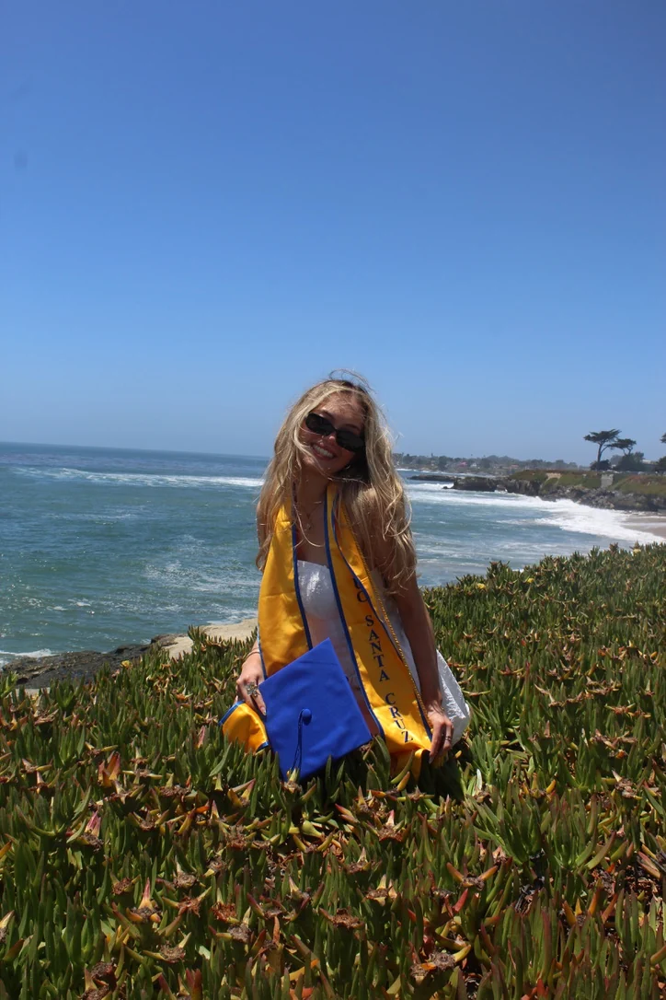
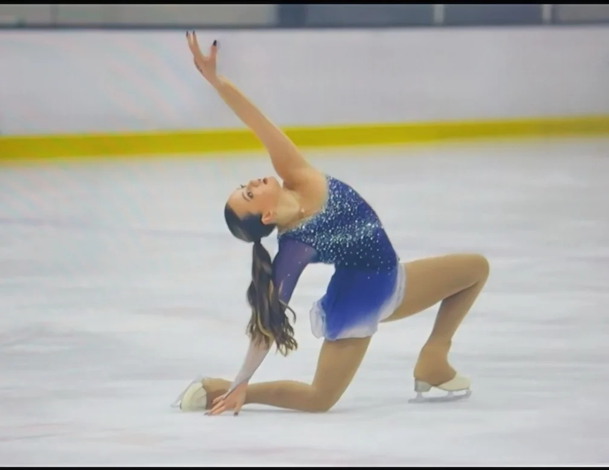
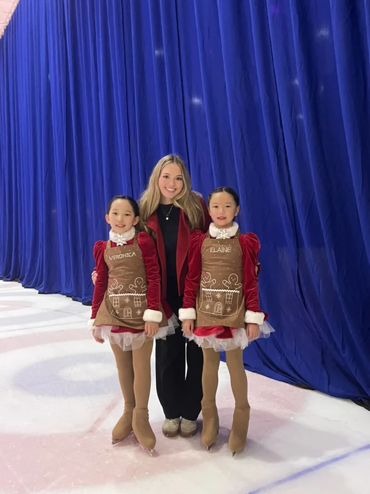
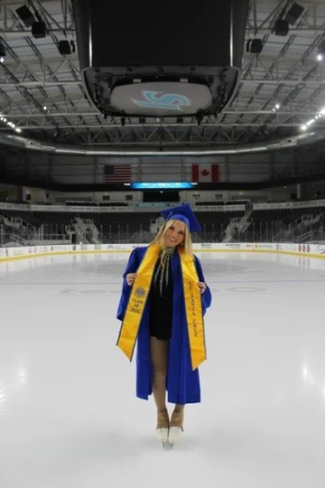

About Me
Engineering, hands-on building, and a lifelong love of figure skating.

Hi, I'm Cassie.
I earned my B.S. in Robotics Engineering, with a minor in Electrical Engineering, from UC Santa Cruz in 2026. I’m now pursuing my M.Eng. in Mechanical Engineering at UC Berkeley, concentrating in control of robotic and autonomous systems.
I enjoy engineering projects that bring mechanics, electronics and controls together. My favorite work involves CAD, prototyping, debugging and testing real systems.
View My Résumé ↗Education
UC Berkeley
Master of Engineering, Mechanical Engineering · Control of Robotic and Autonomous Systems · 2026 to 2027
UC Santa Cruz
B.S. Robotics Engineering · Minor in Electrical Engineering · 2022 to 2026 · Dean’s Honors List
Figure Skating & Coaching
I grew up training and competing in figure skating, and I continue to compete while earning my master's degree. I've also coached skaters since 2023, from beginners to students working on double jumps. The sport has taught me persistence, communication and how to keep improving through practice.




UCSC Alumna Spotlight
Learn more about my experience studying robotics engineering at UC Santa Cruz.
Read Alumna Feature ↗